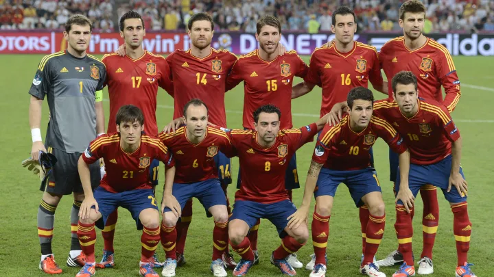

Ranking FIFA : 6° (agosto 2022).
¿Cómo se clasificó al Mundial? Ganó el Grupo B de las Eliminatorias europeas.
Rendimiento en 2021 (G-E-P) : 11-4-3 (40 GF, 19 GC, +21)
Rendimiento en 2022: 4-2-0 (13 GF, 4 GC, +9).
Unai Simón
César Azpilicueta
Eric García
Pau Torres
Jordi Alba
Koke
Sergio Busquets
Pedri
Pablo Sarabia
Álvaro Morata
Ferran Torres.
Nacionalidad español.
Edad: 52 años.
Contratado: 9 de julio de 2018.
Récord en el cargo (G-E-P): 23-12-5.
Títulos en el cargo: Ninguno.
Victoria más notable: 6-0 sobre Alemania, Liga de Naciones 2020-2021.
1930 Uruguay -
1934 Francia 5°
1938 Italia -
1950 Brasil 4°
1954 Suiza -
1958 Suecia -
1962 Chile 13°
1966 Inglaterra 10°
1970 México -
1974 Alemania -
1978 Argentina 10°
1982 España 12°
1986 México 7°
1990 Italia 10°
1994 Estados Unidos 8°
1998 Francia 17°
2002 Corea y Japón 5°
2006 Alemania 9°
2010 Sudáfrica Campeón
2014 Brasil 23°
2018 Rusia 10°
